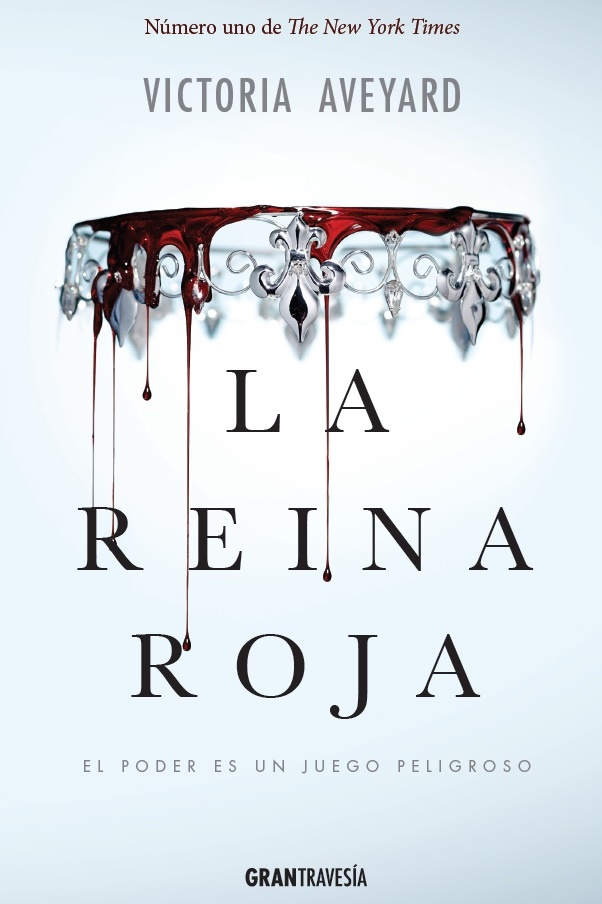
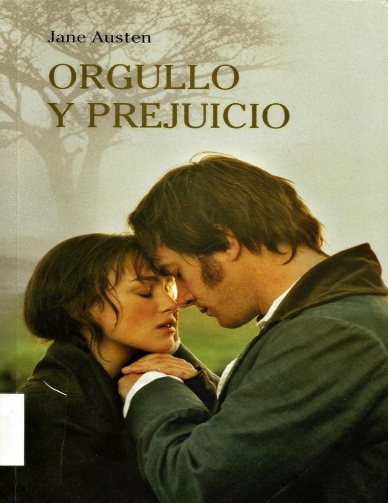
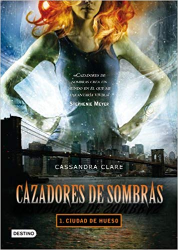

MY BLOG
El Universo de los Libros
Eleonor y Park de Rainbow Rowell - Reseña
Descripción, 17 de agosto, 2017
Globalizando, Eleanor y Park es un libro que abarca gran diversidad de temas: bullying en el instituto, malos tratos familiares, una familia desordenada, problemas, inseguridades, ambiciones, la familia, y la más importante: el amor...

Mi Blog
Descripción, August 17, 2014
Un portal web de gran interés que ofrece comentarios sobre diferentes obras tanto literarias como líricas, pudiendo encontrar contenidos tanto de literatura en general como de novelas, poesías, relatos.

¿Quién soy?
Sólo soy una lectora devota, que busca conectar con otros amantes de escritos, evocando desde clasicos hasta los más modernos, desde novelas históricas hasta fantasía, pero sin olvidar que el verdadero interes es mi pasión por la literatura.
Publicaciones populares
-

La Reina Roja
Reseña -

Orgullo y perjuicio
Valoración personal -

Ciudad de Hueso
Reseña
Etiquetas
Literatura Reseñas Lectura contemporánea Clásicos Fantasía New York Times Literatura Juvenil Sagas Relatos Poesía Novela histórica Romance Thrillers